拭いても拭いてもにゃんこの足跡 [梅吉]
朝晩はまだちょっぴり温もりが欲しい気温。
梅吉さんの居場所は冷蔵庫の上が多くなりました。
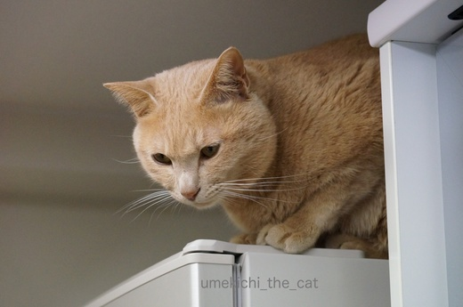
![[猫]](https://blog.ss-blog.jp/_images_e/101.gif) そろそろわしのかつやくのじかんやな。
そろそろわしのかつやくのじかんやな。
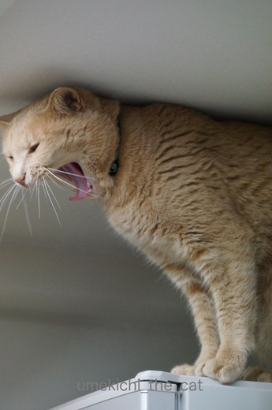
くわ〜っとあくびをして
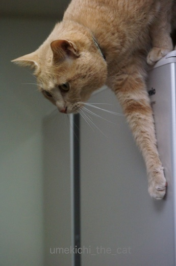
ちじょうにおりたつ てんし といきましょか。
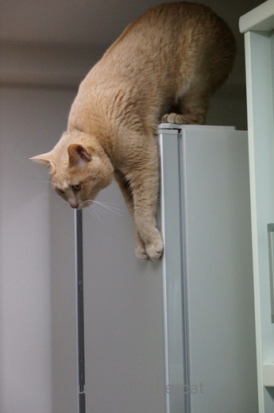
冷蔵庫の前面に手を伸ばして華麗にジャンプ？と思ったら
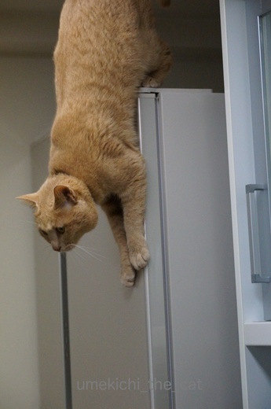
ずるずるずる〜っと手を滑らせて
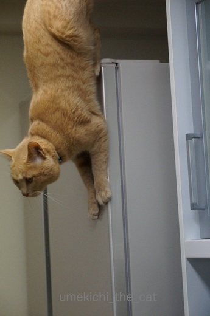
垂直！垂直ですよ！！
後ろ足まで冷蔵庫の前面についてるし。
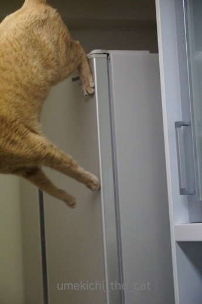
四つの肉球をむぎゅっと押し付けてジャ〜〜〜ンプ。
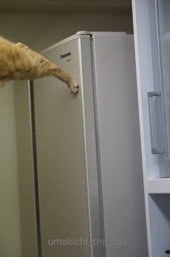
ダメ押しのひとケリ。
猫は高いところから華麗にジャンプというイメージがある様ですが
以外に慎重におっかなびっくり高いところから降りて来ますよね〜。
このずるずる降りとケリのせいで拭いても拭いても冷蔵庫の前面は梅吉の足跡だらけ。
シャンプードレッサーの鏡も同じです。
ちょっとした瞬間、光の加減で浮かび上がる肉球痕に和んだり
また拭かなきゃならないの〜とため息ついたりです・・・・(￣‥￣)=3
 ↑ガブッと一押し↑
↑ガブッと一押し↑
梅吉今日が推定誕生日。２歳になりました。
元気に素直に面白く、そしてちょっぴりアホに育ってくれています。
おとーさん、おかーさんはうれしい・・・(꒦ິ⌑꒦ີ)
今日は特別なお祝いは無し。
お誕生日はあくまで推定なのでブログの記事もメイン扱いにはしませんでした。
ちゃんとしたお祝いはうちの子記念日の７月の予定。
何を隠そうこのブログを始めた日にも当たります。
記念日の記事には我が家に来る前の梅吉の秘蔵画像も登場させようかと思っています＾＾
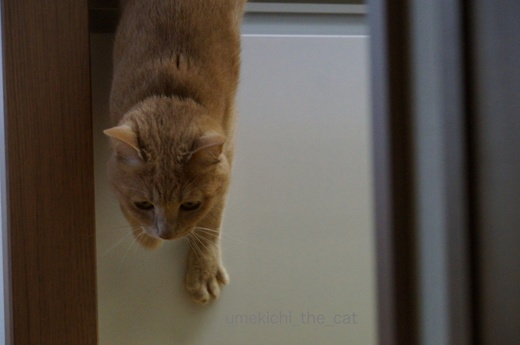
きっちんかうんたーにもあしあとつけるで！
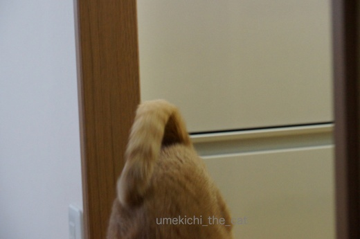
天使の着地！
梅吉さんの居場所は冷蔵庫の上が多くなりました。
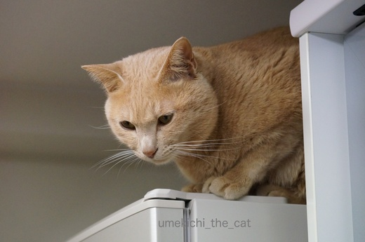
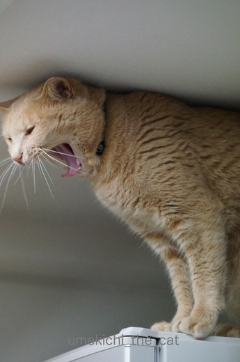
くわ〜っとあくびをして
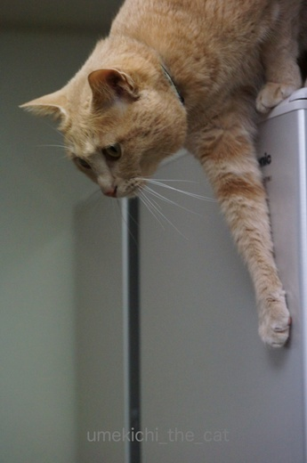
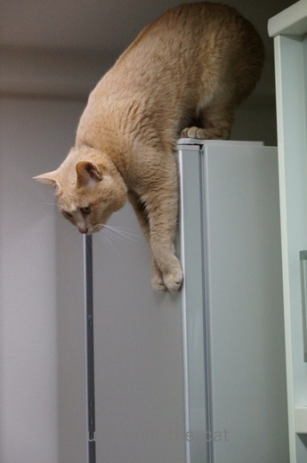
冷蔵庫の前面に手を伸ばして華麗にジャンプ？と思ったら
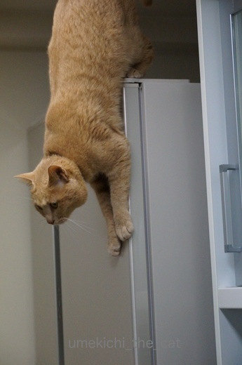
ずるずるずる〜っと手を滑らせて
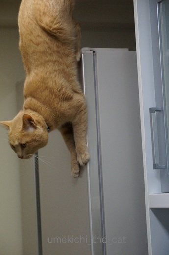
垂直！垂直ですよ！！
後ろ足まで冷蔵庫の前面についてるし。
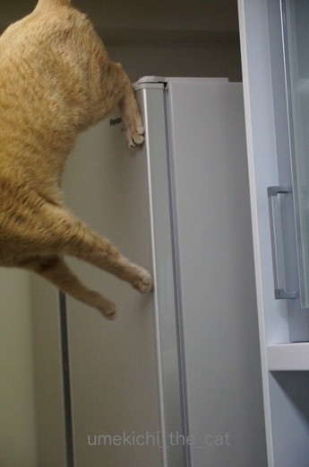
四つの肉球をむぎゅっと押し付けてジャ〜〜〜ンプ。
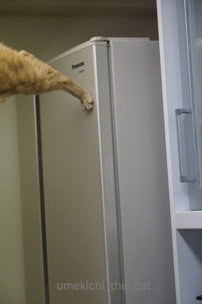
ダメ押しのひとケリ。
猫は高いところから華麗にジャンプというイメージがある様ですが
以外に慎重におっかなびっくり高いところから降りて来ますよね〜。
このずるずる降りとケリのせいで拭いても拭いても冷蔵庫の前面は梅吉の足跡だらけ。
シャンプードレッサーの鏡も同じです。
ちょっとした瞬間、光の加減で浮かび上がる肉球痕に和んだり
また拭かなきゃならないの〜とため息ついたりです・・・・(￣‥￣)=3
梅吉今日が推定誕生日。２歳になりました。
元気に素直に面白く、そしてちょっぴりアホに育ってくれています。
おとーさん、おかーさんはうれしい・・・(꒦ິ⌑꒦ີ)
今日は特別なお祝いは無し。
お誕生日はあくまで推定なのでブログの記事もメイン扱いにはしませんでした。
ちゃんとしたお祝いはうちの子記念日の７月の予定。
何を隠そうこのブログを始めた日にも当たります。
記念日の記事には我が家に来る前の梅吉の秘蔵画像も登場させようかと思っています＾＾
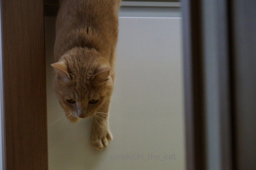
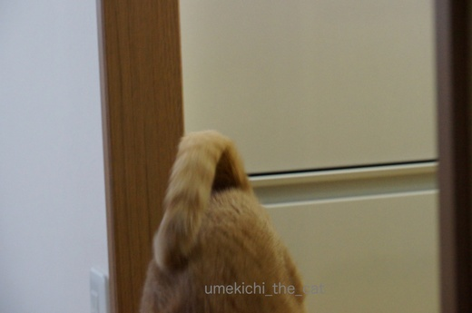
天使の着地！

カフェオレ色の梅吉

梅吉 2023年8月10日 永眠


梅吉と出会った譲渡会

犬猫の理由なき殺処分ゼロ
妄想広告
UMEKICHI 光

爆発的に早い！
時々攻撃的！
Thanks to Mr.Boss365
爆発的に早い！
時々攻撃的！
Thanks to Mr.Boss365

梅吉さんの推定お誕生日おめでとうございまーす(*^▽^*)
わんぱくでもいい、たくましく育ってほしい・・・どこやらのハムのＣＭのように、元気が一番！
ほかに何もいらないと強く思うこの頃です^^
我が家もキッチンは肉球跡だらけ。もう・・・諦めました^^;
垂直梅吉さんの真剣な表情、いいですね～♪
by ゆきち (2017-04-22 20:17)
梅吉さんおめでとうございます。
上腕から肩にかけての筋肉隆々! 奇跡の垂直ジャンプで今日も絶好調ですね!
この調子でず~っと元気でオモロイ梅吉さんでいて下さい!
by zombiekong (2017-04-22 20:38)
梅吉さん、お誕生日おめでとうございます！^^)
みごとなジャンプ写真ですね！
by yes_hama (2017-04-22 21:27)
す、すごい！！ ホントに垂直だっ！！＼(^^)／
肉球がぴたーーっと吸い付いてるのでしょうか？
我が家のオス猫も近い体制をとりますが、ここまでじゃありません。
垂直より手前で飛び立ちます。
梅吉さん、どんどん進化して、壁歩きしはじめたりとか！？
by morichan (2017-04-22 22:33)
肉球デザインの冷蔵庫になりますね。おっかなびっくりでも華麗に飛び降りていますね。
by みぃにゃん (2017-04-22 22:41)
お誕生日おめでとうございますーヽ(*´∀｀)ノ
梅吉さんすごいなぁー
かっこいいです！！
by sumi-cyan (2017-04-23 01:12)
お誕生日おめでとうございます(^^)
王子は肉球スタンプどこにもありません…(..)汗かかないのかなぁ？
で…今、カッティングシートで肉球作って冷蔵庫に貼ったら可愛かろう！と思いつきました！(^_-)
by も〜 (2017-04-23 01:53)
梅吉さん推定お誕生日
お(・∀・)め(・∀・)で(・∀・)と(・∀・)うございます！
実はアメリカ時間4/22はちくわが我が家に来て一周年記念です＾＾
なんか勝手に運命感じてしまいます。
垂直すご～～～い(@ @)
冷蔵庫に足跡？？？うちは見えない（見ないようにしている？）
見えないものは気にならない( ´艸｀)
私神経質なくせに、かなりズボラな部分もあるのです(^^;
by Moon (2017-04-23 05:57)
冷蔵庫マジックのようですね。
猫ちゃんの身体能力恐るべしっ！（＠＠）
誕生日とブログ開設をした日なんですね。
これもまた、おめでとうございます＾＾
今後も楽しみにしています。
by muku (2017-04-23 12:38)
誕生日おめでとうございます～。
梅吉君重力を無視して一瞬冷蔵庫から生えてますね～(*^。^*)
人間は無理ですね。ついでにナノも無理です（笑）
by palpal (2017-04-23 14:13)
凄い垂直！！！
よく撮れましたねーー。それが凄いと思う！(笑)
うちも華麗にジャンプはしないです。
おっかなびっくりって感じｗ
でもあおは慎重さが足りないので、天袋からなども人めがけて「うけとめてー！」って感じで飛び降りてきますよ。こっちが痛いって^^;
梅吉君おたんじょうびおめでとう！！！
7月のうちの子記念日、たのしみだわ^^
by リュカ (2017-04-23 15:59)
ゆきちさん＞「わんぱくでもいい、たくましく育ってほしい」は名言だと思っています。
本当に元気が一番。そして怪我せんといてや！ですよね！！
梅吉が来てからカーテンのほつれを諦め、フローリングのドリフト痕を諦め・・・
冷蔵庫の肉球跡を諦めるのもそう遠くない事と思われます(^_-)-☆
zombiekongさん＞幼い時よりは随分と行動も落ち着いた梅吉ですが
まだまだ訳分からんオモロイ行動をしてくれます。
これはもう個性なのでしょうね〜。
その個性、さらに伸ばして行けるように
下僕は温かい目で見守りたいと思っております＾＾
yes_hamaさん＞冷蔵庫の上で寝ている写真を撮ろうと思っていたら
むっくりと起き出して・・・・
ああ、何かするな！と慌ててカメラを連写モードに切り替えました＾＾
ジャンプの瞬間の動作は写真で見て初めて知りました〜。
どうも動体視力が付いていけていない・・・これって老・・・
（以下、ショックのあまり書き進めません・・・(꒦ິ⌑꒦ີ)
morichanさん＞四つの肉球をぴたーーっと付けて垂直のまま
もう少しずず〜っと滑り降りて着地！することもあるんですよ(｣ﾟﾛﾟ)｣
身体能力？でも私には梅吉の肉球が
何か進化しているとしか思えませんっ。
天井歩きし始めたら報告しますね（＾◇＾）
みぃにゃんさん＞そうかー。掃除なんかしちゃダメ、拭かなきゃ良いのね！
「汚れてる？」って聞かれたら
「肉球模様が角度によって浮き出るデザインなんですよ」って言い切る！！
sumi-cyanさん＞無事２歳の推定誕生日を迎えられました！
10年後にも「かっこいい」って言ってもらえる梅吉であってほしいなぁ。
も〜さん＞王子は肉球サラサラなのね♪
梅吉はいつも肉球湿っぽいのです。匂って見たら湿気っぽいのー！
（はい。猫変態です。自己申告）
冷蔵庫の肉球跡、も〜さん家はカッティングシートでおされに
我が家はリアル跡で生々しく行きますわww
Moonさん＞私も自分が気になるところは以外はズボラに手抜きですよ〜。
というか、猫と暮らしてゆくうちに「ま、いっか」がどんどん増えて行きます・・・^^;
mukuさん＞にゃんこの身体能力にはびっくりしますよ〜。
普通に立っている私の肩に（154㎝）平気で飛び乗って来ます。
役4.5Kgの衝撃、気張っていないとよろけます^^;
palpalさん＞そうかー、一瞬冷蔵庫と一体化してるのね！
早めに刈り取らんと中のもの全部食べられそう(＠◇＠)
ナノくん・・・・がんばれっＯ(≧▽≦)Ｏ
リュカさん＞これはカメラの性能の勝利ですね！
下手でも連写でバシバシ撮ってると稀に決定的瞬間が撮れるのです。
カメラの「カシャカシャカシャカシャ〜」って連写音がしてると
気分はちょっとイワゴーよ（＾◇＾）
あおくんの「うけとめてー！」はリュカさんを信頼してるのね。
梅吉は「どんくさいおかーさんよけてや！」って顔するんだから( ꒪⌓꒪)
by ちぃ (2017-04-23 21:11)
梅吉さん、お誕生日おめでとうございます♪( ´▽｀)
そうそう、ニャンコって華麗にジャンプするイメージがありますが、
降りるときってかなり慎重ですよねぇ( ^ω^ )
まぁ、うちのボーイズは慎重に降りるというよりも慎重に落ちてますがw
by ニッキー (2017-04-23 21:15)
イヤ〜凄い。
天井に頭はついているし、
冷蔵庫の扉に垂直に立ってる？歩いてる？降りてる？飛んでる？
梅吉妙技を披露しましたね。
一瞬でしょうに、シャッターチャンスがばっちりでしたね。
2歳の誕生日あたり（笑）おめでとう。
by kiki (2017-04-23 21:31)
梅吉さん♪ お誕生日おめでとぉ～ございます♪
冷蔵庫にピタっと四つ足が！！
ちょっと怖がりの可愛い天使が舞い降りた瞬間ですね(#^.^#)
by きぃ (2017-04-24 09:12)
梅吉さんお誕生日おめっとさん！
肉球が磁石でできているのですか？
by じゅらまろ (2017-04-24 11:47)
天井に頭当たってますね笑
かわいいです笑
by Y.Tachi (2017-04-24 13:26)
梅ちゃん、お誕生日おめでとう！
優しいママに溢れる愛をいっぱい注がれて、スクスク育ったことがよくわかります。
表情豊かで、いつも全力ね♡
これからも、健やかに楽しい毎日を！
ヽ(〃'▽'〃)ﾉ☆ﾟ'･:*☆ｵﾒﾃﾞﾄｫ♪
by Ginger (2017-04-24 14:49)
ニッキーさん＞おおー(・o・)落ちていらっしゃる・・・
それは益々慎重にしていただかないと^^;
どうぞ、お怪我がありませんように〜。
kikiさん＞ありがとうございます。お誕生日あたりの今日この頃です＾＾
怖い！とか、落ちる！という感覚が全くないのであんな体制が取れるのでしょう・・・
初めて見たときは思わず下で受け止める体制を作りましたが
「どいてんかっ！」と叱られました^^;心配には及ばないそうで・・・
きぃさん＞怖がりなんですが結構無茶もする天使です^^;
じゅらまろさん＞必要時に磁石化するんですよ（＾◇＾）
ウルヴァリンみたいにね！
Y.Tachiさん＞思い切り伸び〜！ごんっ！！でしたよ＾＾
Gingerさん＞スクスク、伸び伸び、過多すぎる愛情に浸りながら
本当に良い子に育ってくれました(꒦ິ⌑꒦ີ)
梅吉は甘えん坊のかまってちゃんなので我が家にはベストマッチの子でしたよ〜。
by ちぃ (2017-04-24 20:09)